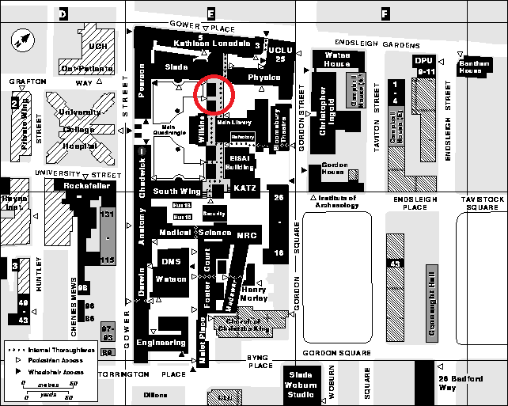

Contact
You can contact us through the following social media channels
We have a WhatsApp group chat where we put out regular updates, but you'll have to send us a DM to get the invite link. Alternatively, we can also be reached via email at su-jugglingandcircus.society.ucl.ac.uk!If you want to send us a gift or if you want to post us a letter because you're that guy, our mailing address is Student Activities Reception, 2/F Bloomsbury Theatre, 15 Gordon Street, London WC1H 0AH.
Find us!
We meet in the North Cloisters of the Wilkins Building every Tuesday 7-9pm. Just come along, let yourself in and introduce yourself to someone. We're a friendly bunch. I have circled in red below the location of the North Cloisters using this incredibly out-of-date map of UCL from the 90s. If you want the exact address, we're at
Wilkins Building, Gower St, London WC1E 6AE. 